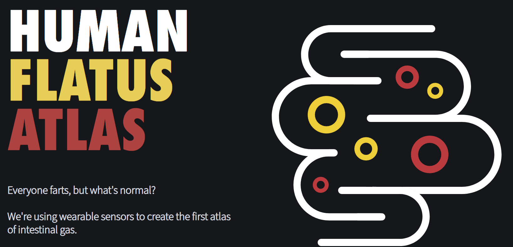
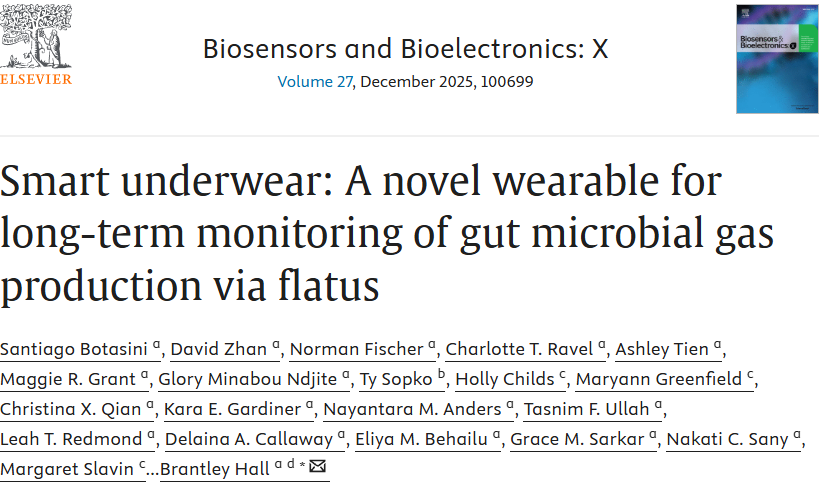

The Late Show with Stephen Colbert
February 19, 2026 · Smart underwear at 3:04
Publicity & Media Highlights
Standout reporting, broadcast moments, and worldwide coverage of the 2026 rollout.


From late-night television to health reporting: memorable moments from the Human Flatus Atlas publicity rollout. Browse at your own pace.
Six selections spanning national news, technology, and specialist science reporting. Original publication dates are retained; publisher access may require a subscription.
The Wall Street Journal
February 19, 2026
A major technology feature that takes the wearable seriously and connects it to gut health.
Read the feature →Scientific American
February 17, 2026
An accessible explanation of the measurement technology and the science behind the findings.
Read the feature →Science News
March 10, 2026
An in-depth account of the sensor’s origins, individual variation, and the Human Flatus Atlas.
Read the feature →USA Today
February 18, 2026
National health reporting that brings the question of normal gas patterns to a broad audience.
Read the feature →New Scientist
February 25, 2026
A memorable Feedback column bringing the project to an international science readership.
Read the feature →Chemical & Engineering News
April 1, 2026
Specialist science coverage connecting the sensor technology with microbiome research.
Read the feature →Recorded rollout figures, including 10,000+ applications received. These figures describe the publicity campaign rather than a live counter.